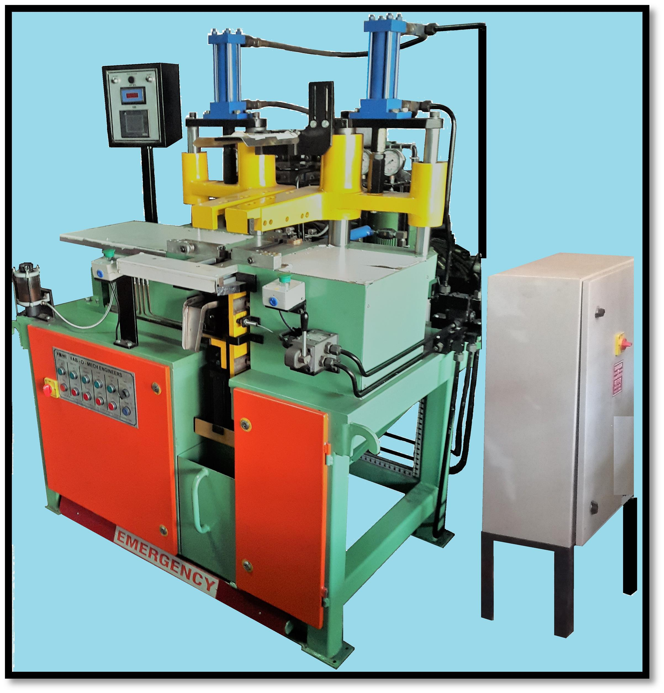

VALVE FIXING MACHINE
A high-efficiency, automated system designed for the precise insertion and securing of valve cores into cured rubber inner tubes. Featuring robust construction and intuitive controls, the machine ensures consistent, airtight assembly, significantly increasing production throughput and reducing manual labor in post-curing operations.
View Details
TUBE CURING PRESS
A high-precision hydraulic system engineered for the uniform vulcanization of inner tubes. Utilizing advanced thermal regulation and synchronized hydraulic pressure control, the machine ensures consistent curing profiles, resulting in structural integrity and durability across a comprehensive range of tube dimensions, from high-pressure bicycle tubes to large-scale Off-The-Road (OTR) applications.
View Details
AUTO PATCH APPLICATION
An automated, high-precision unit engineered for the consistent application of reinforcement patches onto inner tubes. Utilizing advanced Human-Machine Interface controls and encoder-synchronized speed systems, the machine ensures precise patch cutting and secure bonding, establishing the structural integrity required for reliable valve mounting and long-term tube durability.
View Details
TUBE DEFLATION UNIT
A specialized, high-performance unit engineered for the rapid and effective removal of residual air from cured inner tubes prior to final packaging. Featuring a powerful 5 HP water-based vacuum pump and a robust rotary-type assembly with six vacuum hanger stations, this unit ensures complete deflation to facilitate compact, efficient storage and transport.
View Details
HYDRAULIC BALE CUTTER
A heavy-duty, industrial-grade system designed for the efficient sizing of rubber raw material. Featuring a robust hydraulic powerpack and a precision-hardened steel cutter blade, this unit delivers consistent, high-force shearing of rubber bales to prepare material for downstream processing.
View DetailsH-250 HYDRAULIC SPLICER
A high-production hydraulic joining system engineered for the precise splicing of rubber inner tubes. Featuring a PLC-operated Delta control interface and sinking-type knife carriage on linear motion guides, this machine ensures consistent, airtight butt-welded joints for tubes up to 250mm in width, achieving rates of 140–150 tubes per hour.
View Details.jpg)
VALVE CHAMBER
A high-capacity, thermally insulated heating chamber designed to maintain optimal temperatures for valve preparation in auto tube plants. Featuring a robust construction of Mild Steel angle and Cold Rolled Close annealed sheets with polyurethane foam insulation, the unit ensures uniform heat distribution via integrated strip heaters and a digital temperature controller to maintain consistent material conditions.
View Details
TUBE SPLICER H-150
A robust, heavy-duty vulcanizing press designed for high-precision rubber tube splicing. Featuring an automated PLC-controlled interface, hydraulic knife cutting, and programmable heat and pressure profiles, the H-150 ensures durable, airtight joints for tubes ranging from 55mm to 145mm in width.
View Details
TUBE SPLICER H-250
A high-production hydraulic joining system engineered for the precise splicing of rubber inner tubes. Featuring a PLC-operated Delta control interface and a sinking-type knife carriage on linear motion guides, this machine ensures consistent, airtight butt-welded joints for tubes up to 250mm in width, achieving rates of 140–150 tubes per hour.
View Details
CORE FIXING MACHINE
A compact, high-efficiency unit designed to securely tighten valve cores into inner tubes. The machine features an adjustable tightening force mechanism to ensure consistent, reliable assembly of valve components.
View Details